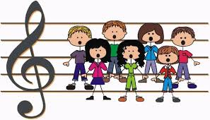
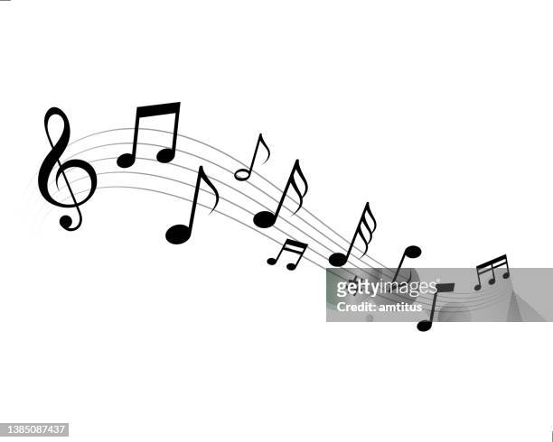
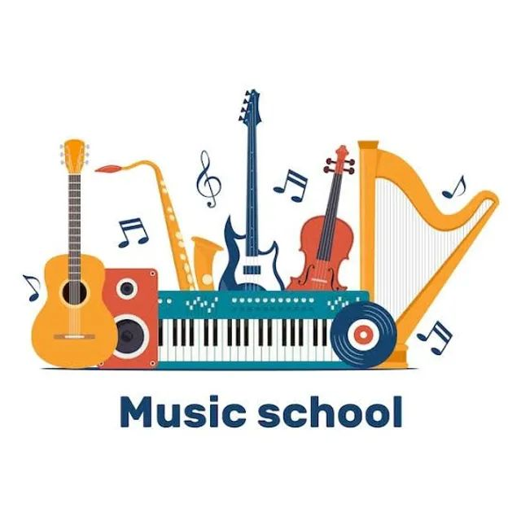

Marque sua aula com especialistas
Os alunos podem agendar aulas particulares com instrutores especializados em diversos instrumentos e estilos musicais. Desde iniciantes até músicos experientes em busca de aprimoramento, os alunos podem selecionar um instrutor com base em suas habilidades e preferências, agendar aulas convenientes e personalizadas para atender às suas necessidades de aprendizado musical.
Agende sua aulaBiblioteca musical diversificada
Nesta seção, os alunos e professores tem acesso a uma coleção de músicas. A biblioteca abrange uma variedade de gêneros musicais e níveis de habilidade, permitindo que os alunos explorem suas habilidades e também possam aprimorar ela de maneira divertida. 
Explore nossa bibliotecaFaça uma aula prática a qualquer momento
Nós oferecemos um recurso para os alunos gravarem seus vídeos tocando o instrumento e mandar para o professor avaliar ou também verificar a pontuação obtida. Deste modo o aluno pode selecionar a música de seu gosto e praticar a qualquer hora.
Veja mais aqui